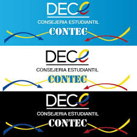

DECE
El departamento de consejería estudiantil es un equipo multidisciplinario se encarga de velar por el bienestar de los estudiantes, su objetivo principal es brindar atención integral alos estudiantes, apoyándolos en su desarrollo emocional, social y educativo.
Los encargados de este departamento son:
Msc. Gloria Galarza
Psicólogo. Marcelo López
FUNCIONES DEL DECE:
Acompañamiento emocional y educacional; Brindar apoyo a estudiantes que lo necesiten, ya sea por problemas personales o académicos.
Prevención y detección de problemas; Identificar situaciones que pueden afectar el bienestar de los estudiantes y tomar medidas para prevenir o intervenir.
Apoyo a docentes y familias; Colaborar con los docentes y familias para crear un ambiente de aprendizaje y crecimiento saludable.
Tiene área de intervención:
Es un recurso valioso para los estudiantes, docentes, familias.
Esto proporciona apoyo y orientación para crear un ambiente de aprendizaje y crecimiento saludable y positivo.
 VOLVER A LA PAGINA...